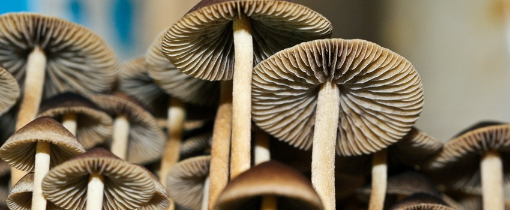

Psilocybe Cubensis 14/3/2022
Se puede encontrar en países norteamericanos como México y otras regiones del sur de Estados Unidos, así como en la India, Filipinas, Tailandia, Vietnam, Australia y en determinados territorios de Sudamérica. Es fácilmente identificable por su coloración blanca y dorada, así como anaranjada y marrón por la zona central. Además, también se puede reconocer por sus espóras de color café, además de por el anillo blanco que se ennegrece con el paso del tiempo si se desarrolla correctamente.
Psilocybe Tampanensis 14/3/2022
Perteneciente a la familia de hongos alucinógenos Strophariaceae, también se le conoce popularmente como “la piedra filosofal”. El descubrimiento de esta especie se remonta a finales de la década de los 70, cuando se encontró un espécimen en Tampa (Florida), el cual fue clonado para poder ser comercializado por todo el mundo. De manera silvestre es complicado de encontrar, ya que por ejemplo desde su primer avistamiento no se ha vuelto a localizar en esta región del sureste de Estados Unidos.
Psilocybe Cyanescens 14/3/2022
La apariencia del hongo Psilocybe Cyanescens muestra un sombrero de carácter higrófano, con colores castaños y marrones, que terminan por convertirse en un amarillo cremoso y blanco por la estípite. Prolifera de manera natural en torno a virutas de madera, siendo más fácil encontrarlos en el noroeste de Estados Unidos, sobre todo en California, aunque también se han hallado en Europa, Australia y al oeste de Asia. Suele fructificar con la llegada del frío y las lluvias otoñales, pudiéndose agrupar de manera gregaria o cespitosa. Exhibe un sombrero de 2-5 cm de diámetro totalmente curvado, mientras que el tallo amarillento y blanco llega a medir 3-6 cm.
Psilocybe Azurescens 14/3/2022

Similar a Psilocybe Cyanescens, está considerado como uno de los hongos más potentes por su alto contenido de psilocibina, el cual puede aproximarse en algunos casos al 2%. Asimismo, requiere de una alimentación saprofítica, fructificando en suelos con restos caducifolios o lignícolas. Se puede encontrar con suma facilidad en diferentes estados de EEUU como California, Vermont o Nuevo México, así como en otros países como Nueva Zelanda y Alemania. Su sombrero tiene un diámetro aproximado de 1 cm, que termina por achatarse.